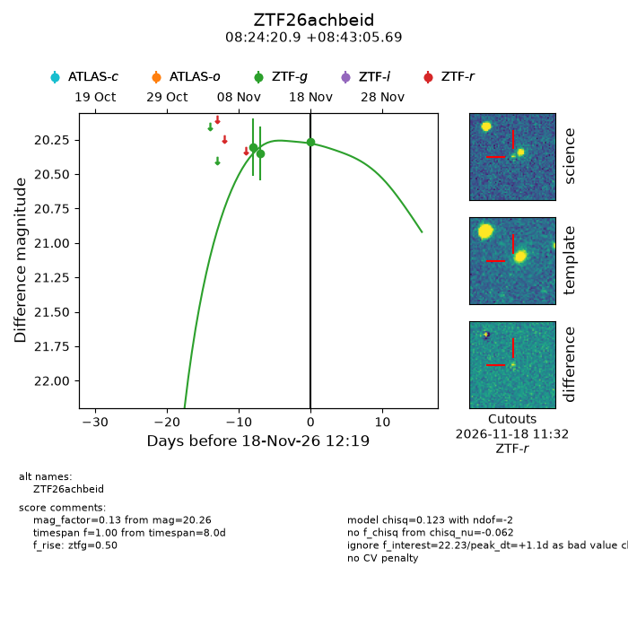
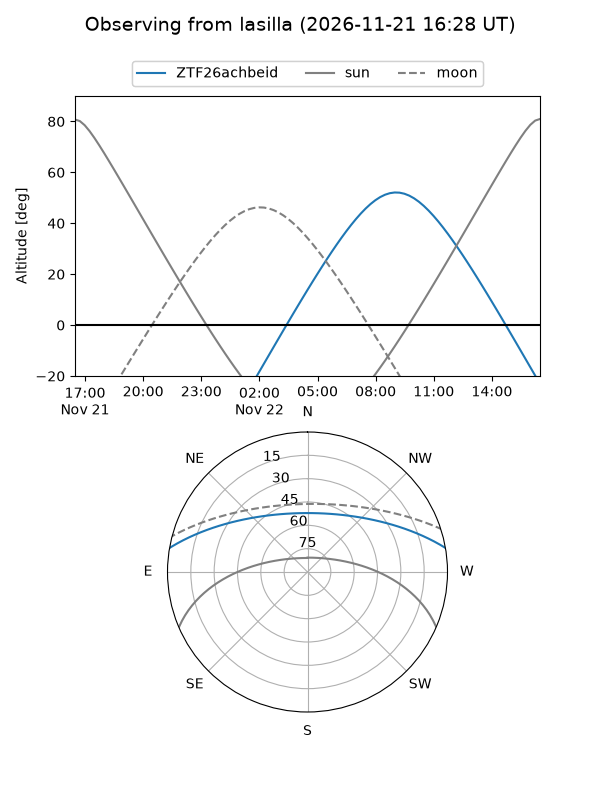
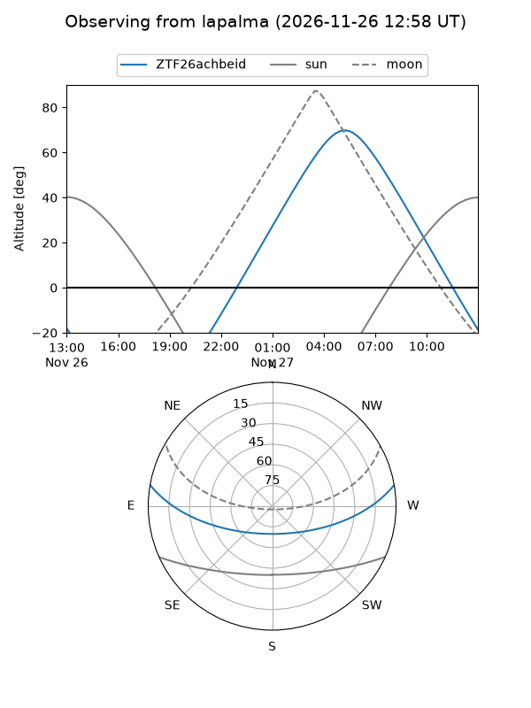
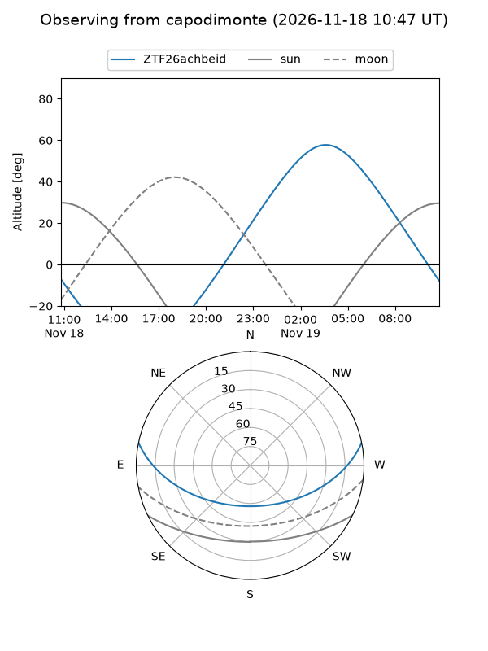
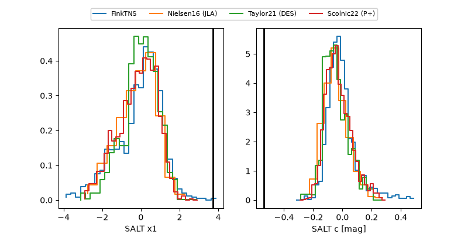

ZTF26achbeid
Target ZTF26achbeid at 2026-11-18 12:20
Aliases and brokers:
FINK-ZTF: ztf.fink-portal.org/ZTF26achbeid
Lasair-ZTF: lasair-ztf.lsst.ac.uk/objects/ZTF26achbeid
ALeRCE-ZTF: alerce.online/object/ZTF26achbeid
Direct TNS query: direct search
alt names
ZTF26achbeid (ztf,fink_ztf)
Coordinates:
equatorial (ra, dec) = 126.0870,+8.71825
equatorial (HMS+DMS) = 08:24:20.87,+08:43:05.69
galactic (l, b) = (215.6331,+24.58586)
Flags:
peak dt: +1.1
Photometry:
last ztfg=20.26
3 ztfg detections
Lightcurve

Visibility



Additional plots
